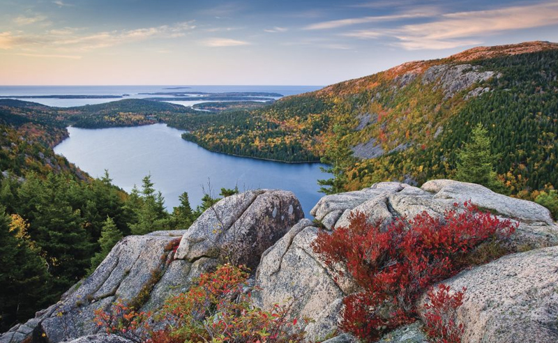

Antelope Canyon, Arizona
Antelope Canyon is a slot canyon in the American Southwest, on Navajo land east of Page, Arizona. It includes two separate, scenic slot canyon sections, referred to as Upper Antelope Canyon, and Lower Antelope Canyon.
Kenai Fjords, Alaska
Alaska’s Kenai Fjords National Park is named after its numerous glacial-carved fjords—beautiful ice valleys that sit below sea level. The fjords run down the mountains into the iconic Harding Icefield, one of the largest ice fields in the United States with 40 tidewater glaciers flowing into it.
White Mountains, New Hampshire
The White Mountains are a mountain range covering about a quarter of the state of New Hampshire and a small portion of western Maine in the United States. They are part of the northern Appalachian Mountains and the most rugged mountains in New England.

Crater Lake, Oregon
With the lake at its center, this Oregon national park offers many ways for visitors to explore and enjoy. Take in the sights while driving along the 33-mile (53-kilometer) Rim Drive, which circles Crater Lake, or aboard a ranger-led cruise on the lake for a close-up view of rock formations like the Phantom Ship and Wizard Island.
Grand Prismatic Spring, Wyoming
The Grand Prismatic Spring in Yellowstone National Park is the largest hot spring in the United States, and the third largest in the world, after Frying Pan Lake in New Zealand and Boiling Lake in Dominica. It is located in the Midway Geyser Basin.
Multnomah Falls, Columbia River Gorge, Oregon
Multnomah Falls is the most visited natural recreation site in the Pacific Northwest with more than 2 million stopping by each year to take in the views!
Na Pali Coast, Kauai, Hawaii
With steep emerald cliffs, lush valleys, and remote cascading waterfalls, the Na Pali Coast is one of Hawaii’s most beautiful regions, and no visit to Kauai is complete without a visit to this magical coastline. There are only three ways to explore the Na Pali Coast—by air, by sea, and on foot—and each offers its own unique perspective.

Antelope Valley, California
The Antelope Valley is located in northern Los Angeles County, California, and the southeast portion of Kern County, California, and constitutes the western tip of the Mojave Desert. It is situated between the Tehachapi, Sierra Pelona, and the San Gabriel Mountains.

Acadia National Park, Maine
Acadia National Park is a 47,000-acre Atlantic coast recreation area primarily on Maine's Mount Desert Island. Its landscape is marked by woodland, rocky beaches and glacier-scoured granite peaks such as Cadillac Mountain, the highest point on the United States’ East Coast. Among the wildlife are moose, bear, whales and seabirds.